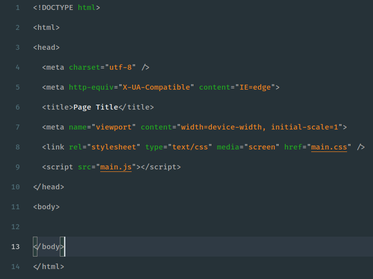

Installation
- Open the Extensions sidebar in VS Code
- Search for Joker and choose "Joker Theme" by Leandro Nascimento
- Click Install
- Click Reload to reload VS Code
- Navigate to File > Preferences > Color Theme and select Joker Theme
- You're all set! Enjoy! 🎉
Best Font for theme
The font used in the previews is Fira Code, available on Fira Code Guithub.
After you've downloaded and installed it, open your editor's settings and add the following...
"editor.fontFamily": "Fira Code Medium"